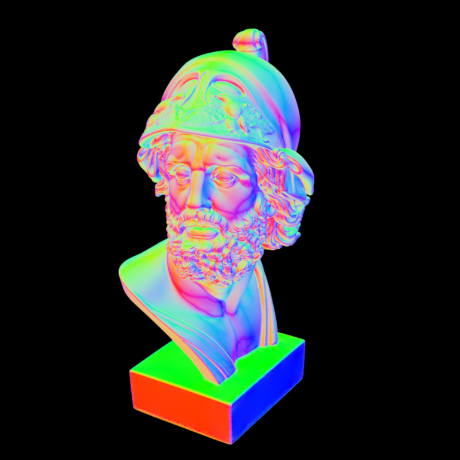
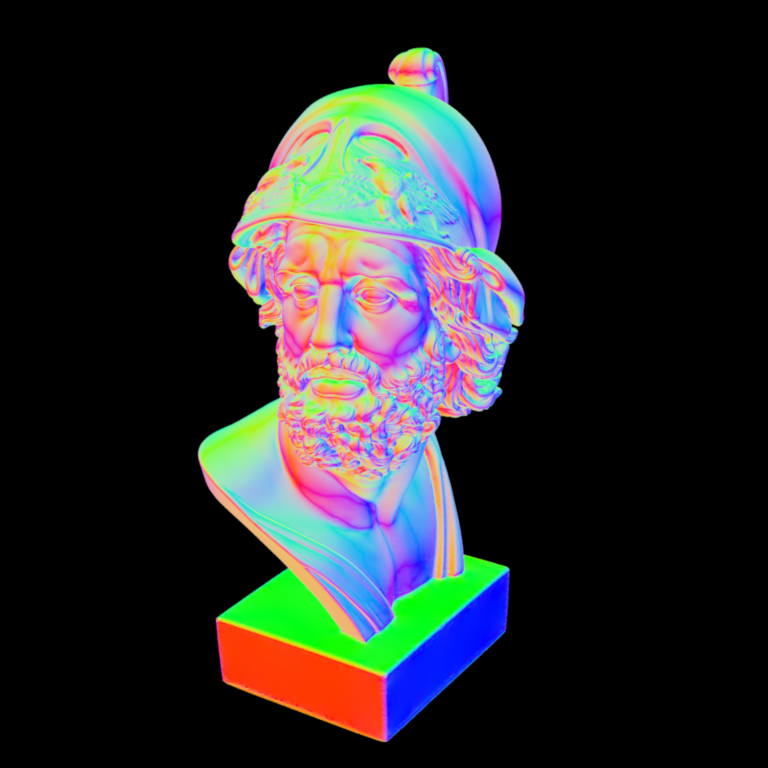
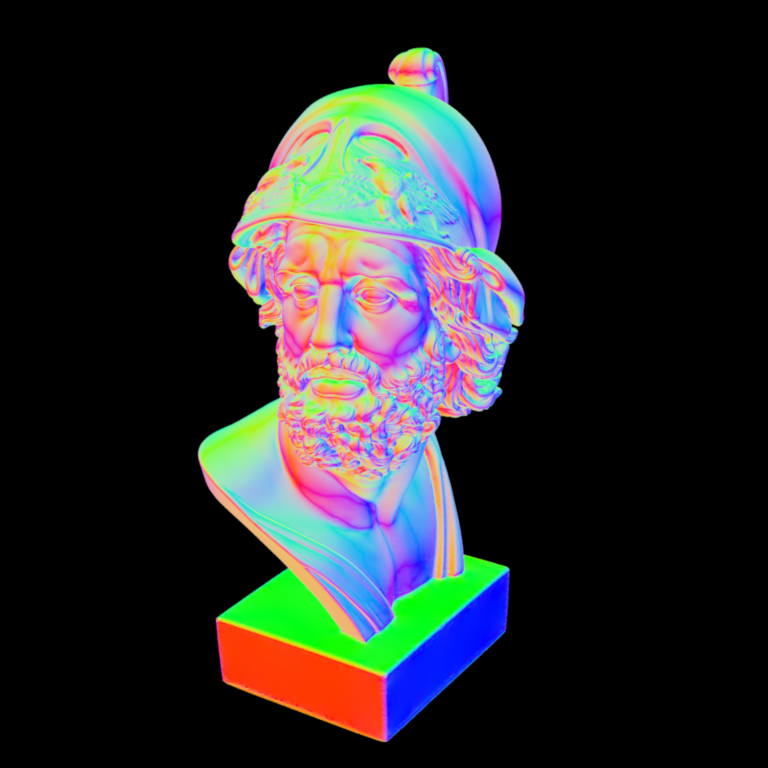

**Homework 2**
Student name:Baris Sevilmis
Sciper number:306798
Octree construction (50 pts)
============================
buildRec() is one of our main objective functions, in which we create the tree structure.
Base condition for leaf nodes is to have less than 10 triangle indices or stop after a certain depth which is 25 by default.
Deeper the tree, faster is the search as we will have less triangles to search through.
It has been decided through experimentation that 20 is a decent depth for our homework object.
For the recursion part, we simply create new bounding boxes from current center point and corner points one by one,
and check for intersections between triangle bound boxes and child bound boxes. Index masks are created for new bounding boxes and
children node are set called recursively within the member function setChild() and connected to its parent. Index masks are kept just for the leaf nodes,
otherwise memory requirement of the implementation would be unreasonable. Implementation of the function could be seen in following Code 1.
Ray traversal (25 pts)
======================
findIntersect() is our Octree traversal function, where we proceed by checking if current bounding box intersects the traced ray.
We proceed by checking index masks and if node is a leaf node, check for intersection between triangles stored within the node.
In case of bounding boxes not intersecting with the ray, we simply return false. If node is not leaf, then it means we have to recursively call findIntersect().
Instead of calling children nodes to find intersections does indeed work, but we can be faster if we sort children nodes by their distances to ray,
we find intersections much faster. If an intersection is found, return value is true and propagated through boolean found value.
Improved ray traversal (25 pts)
===============================
std::sort and std::pair function are utilized and used to sort triangles by their bounding box distances to traversing ray. This process makes our search much more faster
as the nodes closer distancewise to ray have a higher chance to interact.
Surface normal visualization of the Ajax bust:

Note: Nori automatically generates both an `.exr` as well as an sRGB tonemapped `.png` image of your rendering that is directly used for the comparison above. Please still commit both versions in your `results/homework-X` folder.
Feedback
========
We would appreciate any comments or criticism to improve the projects in future years--naturally, this part will not be graded. Examples of information that is useful to us includes:
* How much time did you spend on the assignment? How was it divided between designing, coding, and testing?
* What advice should we have given you before you started?
* What was hard or surprising about the assignment?
* What did you like or dislike? What else would you change?
 
